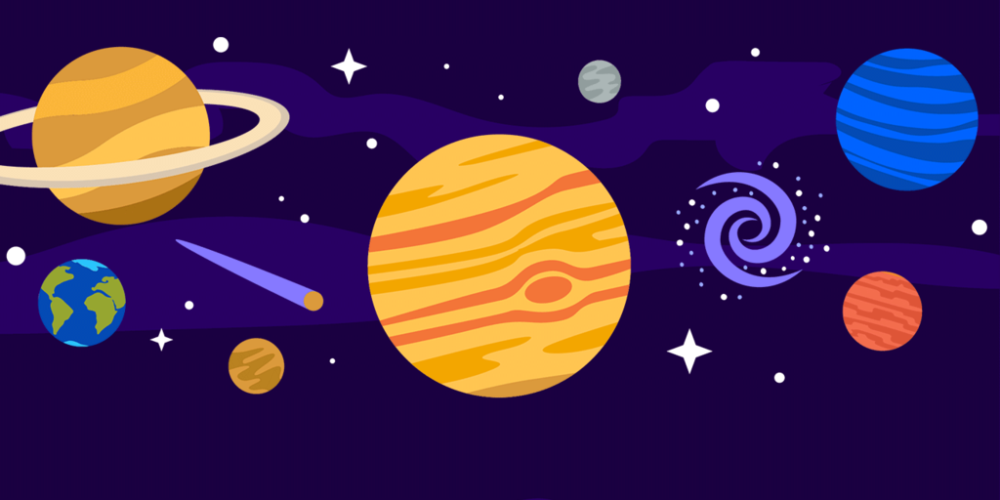
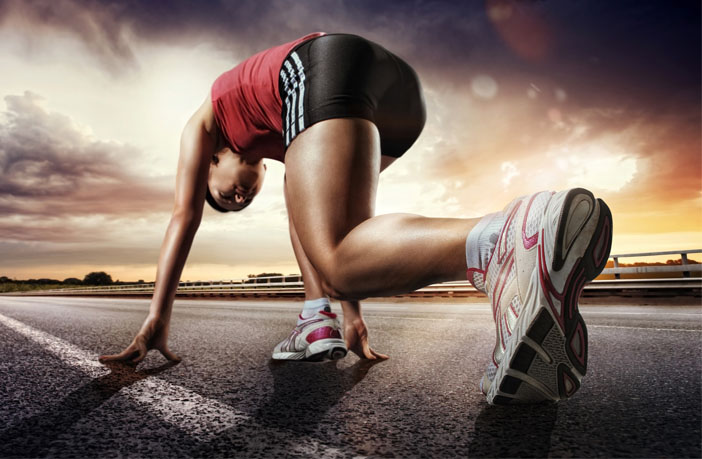

INTERESTS AND HOBBIES
ASTRONOMY
From my childhood I am too much enthusiaistic regarding astronomy after tragic death of Kalpana Chawla and after successful landings 0f Sunita Williams.The thing which fascinated me the most is the International Space Station.At first I couldnot believe that there exists something in space on which astronauts live.At present I am eagerly waiting for ISRO's Chandryaan-3 and first human crew mission Gaganyaan.
CODING
I came to know about coding after clearing JEE. And when I first attended my lecture on C++ I felt coding is not my thing. I was not able to develop interests but I kept on trying and when I studied recursions I was totally fascinated and from that day I started learning different programming languages and tried different algorithms.I want to develop my career in the field of coding most probably in graphic design or gaming industry.
QUIZ

From my childhood I love to read newspapers,articles and current affairs magazine and due to competetitive nature I loved quizzing.During my school and college time I participated in many quiz competitions and I won several inter school and district level quizzes.Once I qualified for national level quiz competition named as Quizzicus Indica which was basically based on India and its culture.
VIDEO EDITING
Whenever I get some free time the thing which I love to do the most is video editing. I absolutely love to add effects change pace of clips and merge them to get a full fledged entertaining videos.I am a very shy person so I prefer to make videos on famous personalities. Recently I made a video on MS Dhoni with playdate as background score.According to me digital editing is a great way to enhance creative skills for people like me who are terrible in paintings and drawings.
PHYSICAL FITNESS
As I belong from a family of northern origin I used to eat heavy stuffs like desi ghee,sweets and parathas. Due to which I was a very chubby kid in my childhood.But due to my fatness I faced a huge number a problems so after that I started doing exercises regularly and followed a strict diet plan. After getting into shape I was interested towards atheletics and then I took proper training and enhanced my atheletic skills.I won a number of athletics competitions and i also won district level and qualified for state level. Basically I participate in 100m and 200m races.
COOKING
I am a very foody person. I love to try new and different dishes.In my childhood I used to stay in kitchen when my mother was cooking food I used to watch her closely and that developed my interests towards cooking.I always used to live in a myth that healthy foods can't be tasty but my thinking changed when I tried roasted peanuts cake made from oats and from that day I try to make dishes which are not only tasty but also healthy.